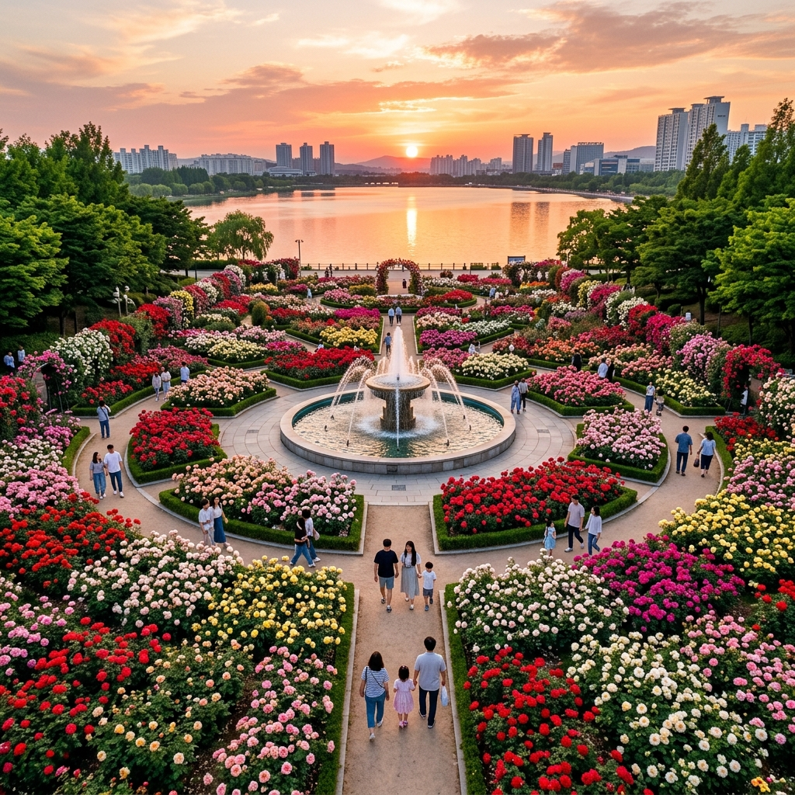
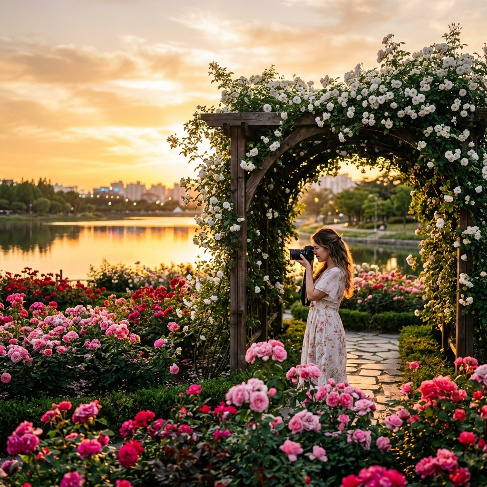

일산 호수공원 노을빛 장미축제 2026 — 장미원 만개 절정기, 노을 인생샷 명당과 셔틀 정보
📍 핵심 요약
경기도 고양시 일산서구에 위치한 일산 호수공원 장미원은 매년 5월 하순부터 6월 초 사이에 만개의 절정을 맞이합니다. 13,000㎡ 규모의 장미원에는 117종 3만여 그루의 장미가 식재되어 있으며, 공원 전체에 퍼지는 달콤한 장미 향기와 서쪽 하늘을 물들이는 일몰이 겹치는 저녁 시간대는 수도권 최고의 감성 명소로 손꼽힙니다. 입장료는 무료이며, 지하철 3호선 주엽역·마두역에서 도보 접근이 가능합니다. 이 글에서는 2026년 만개 예상 시기, 일몰 인생샷 포인트, 주차·셔틀 운영 정보를 상세하게 안내합니다.
🌿 일산 호수공원의 역사와 장미원의 탄생
일산 호수공원은 1996년 개장한 우리나라 최초의 인공 호수 공원입니다. 총면적 약 100만 제곱미터, 호수 면적만 30만 제곱미터에 달하는 광활한 규모는 당시로서는 혁신적인 도시 공원 사업이었습니다. 그 안에 자리 잡은 장미원은 개장 당시부터 호수공원의 핵심 명소로 계획된 시설입니다.
장미원은 호수 북쪽 구역에 위치하며, 원형 분수대를 중심으로 117종의 장미가 그루브 형태로 심겨 있습니다. 분수대 주변을 감싸는 아치형 장미터널, 넝쿨 장미가 뒤덮은 퍼골라 구간, 그리고 계단식 화단에 줄지어 심긴 장미 군락이 각각 다른 분위기를 만들어냅니다. 특히 오랜 세월을 거쳐 성숙해진 장미 덩굴들이 퍼골라를 완전히 덮어버린 구간은 꽃 지붕 아래를 걷는 느낌을 줍니다.
장미원의 또 다른 매력은 호수와의 조화입니다. 장미 군락 사이로 서쪽 호수가 보이는 각도에서 일몰 사진을 찍으면, 붉은 장미와 황금빛 하늘이 한 프레임에 담기는 극적인 구도가 완성됩니다. 이 구도는 매년 수십만 장의 SNS 사진을 탄생시키는 일산 호수공원 장미원만의 시그니처입니다.
📅 2026년 장미 개화 예상 일정
일산 호수공원의 장미 개화는 기상 조건에 따라 해마다 약간의 차이가 있습니다. 과거 10년간의 기록을 분석하면 다음과 같은 패턴을 보입니다.
| 시기 | 개화 상태 | 관람 추천도 |
|---|
| 5월 10일~15일 | 꽃망울 맺힘 ~ 일부 개화 시작 | ★★★☆☆ |
| 5월 16일~22일 | 60~80% 개화 진행 | ★★★★☆ |
| 5월 23일~6월 5일 | 90% 이상 만개 절정 | ★★★★★ |
| 6월 6일~15일 | 점진적 꽃잎 낙하 시작 | ★★★★☆ |
| 6월 16일 이후 | 일부 2차 개화 진행 | ★★★☆☆ |
2026년은 봄철 기온이 예년보다 1~2도 높은 편으로 예보되어, 장미 개화가 약 3~5일 앞당겨질 가능성이 있습니다. 방문 전 고양시 공원과 공식 소셜미디어(@goyangpark)에서 현장 개화 상황을 확인하시면 가장 좋은 타이밍을 잡을 수 있습니다.

일산 호수공원 장미원 전경 — 원형 분수대와 호수가 어우러진 황금 시간대 / AI 제작 이미지
🌅 노을 인생샷 명당 TOP 4 — 일몰과 장미의 완벽한 조화
일산 호수공원을 수십 번 찾은 사진 마니아들 사이에서 공유되는 노을 촬영 포인트 네 곳을 엄선했습니다.
① 원형 분수대 서쪽 화단 — 일몰 직사 구도
장미원 중심부의 원형 분수대에서 서쪽을 바라보면 호수 너머 지평선이 열립니다. 5월 하순 일몰 방향(북서쪽)으로 장미가 펼쳐지는 구도로, 붉은 장미와 일몰 하늘이 색온도를 맞추는 오후 7시 20분~40분 사이에 촬영하면 가장 극적인 사진을 얻을 수 있습니다. 스마트폰 기준으로는 광각 모드를 켜고 HDR을 활성화하는 것이 효과적입니다.
② 퍼골라 장미 터널 내부 — 꽃 지붕 역광
넝쿨 장미가 덮은 퍼골라 구간 내부에서 서쪽 출구 방향으로 카메라를 향하면, 꽃잎 사이로 비쳐드는 황금빛 역광이 환상적인 빛망울을 만들어냅니다. 터널 안쪽에서 밖을 향한 실루엣 사진이나 인물 사진에 특히 효과적이며, 오후 6시 30분부터 일몰까지 가장 아름다운 빛이 들어옵니다.
③ 호수변 장미 화단 수면 반영 구도
장미원 북쪽 경계와 맞닿은 호숫가 산책로에서 수면 방향으로 카메라를 낮추면, 호수에 반영된 일몰 하늘과 장미 군락이 대칭을 이루는 구도가 완성됩니다. 바람이 잔잔한 날 저녁 이 구도를 잡으면, 거의 완벽한 거울상 사진이 가능합니다.
④ 계단식 화단 정상부 — 부감 구도
장미원 동쪽의 계단식 화단 최상부에 올라서면, 장미 군락이 발아래로 펼쳐지고 그 너머 호수와 일몰이 하나의 프레임에 담깁니다. 스마트폰 포트레이트 모드로 앞의 장미에 초점을 잡으면 배경의 일몰이 자연스럽게 보케 처리되어 프로 사진 느낌이 납니다.
🚌 교통 및 셔틀버스 정보 — 주차 걱정 없는 방법
일산 호수공원은 규모가 크고 주변 접근로가 잘 정비되어 있지만, 5월 하순 주말에는 주차 대기가 1시간을 넘는 경우가 빈번합니다. 다음 교통 방법 중 하나를 선택하시기를 권장합니다.
| 교통 수단 | 접근 방법 | 소요 시간 |
|---|
| 지하철 3호선 | 주엽역 1번 출구 → 도보 약 12분 | 서울 출발 기준 약 40분 |
| 지하철 3호선 | 마두역 2번 출구 → 도보 약 8분 | 서울 출발 기준 약 38분 |
| 버스 | 호수공원입구 버스정류장 하차 | 고양 시내 기준 약 20분 |
| 자가용 | 호수공원 내 주차장 (2,000원/30분) | 주말 대기 30분~1시간 예상 |
| 자전거 | 경의선 자전거도로 연결 | 파주·마포 방면에서 1~2시간 |
장미 시즌 셔틀버스: 고양시는 매년 5월 하순 장미 절정기에 맞춰 일산 동구청 ~ 호수공원 구간의 무료 셔틀버스를 한시적으로 운행합니다. 2026년 운행 여부와 일정은 고양시 공식 홈페이지(www.goyang.go.kr) 또는 고양시 120 민원콜에서 확인하시기 바랍니다. 통상적으로 주말 오전 10시~오후 7시 사이 30분 간격으로 운행하는 경우가 많습니다.

일산 호수공원 퍼골라 장미터널 — 황금빛 노을이 꽃잎을 물들이는 저녁 / AI 제작 이미지
🌹 117종 장미 품종 가이드 — 내가 좋아하는 장미를 찾아서
일산 호수공원 장미원의 가장 큰 매력 중 하나는 117종이라는 다양성입니다. 흔히 보는 빨간 장미, 분홍 장미 외에도 줄무늬 장미, 복층 꽃잎 장미, 향기가 특히 강한 품종 등이 곳곳에 표찰과 함께 식재되어 있습니다. 장미원 입구 안내판에는 주요 품종별 위치가 표시된 지도가 비치되어 있으므로, 꼭 확인하시기 바랍니다.
특히 주목할 품종은 다음과 같습니다.
| 품종명 | 특징 | 위치 |
|---|
| 퀸 엘리자베스 | 연분홍, 대형 꽃, 강한 향기 | 원형 분수대 동쪽 화단 |
| 블랙 바카라 | 진한 암홍색, 고급스러운 분위기 | 퍼골라 입구 우측 |
| 피스 | 연노랑과 분홍의 복색, 세계 가장 유명한 장미 | 계단식 화단 중간 |
| 아이스버그 | 순백색 클러스터형, 풍성한 군락감 | 호수변 화단 전체 |
| 줄리아 | 살구빛 앤티크 톤, 빈티지 감성 | 원형 분수대 서쪽 |
블랙 바카라는 국내에서 보기 드문 품종으로, 와인색에 가까운 깊은 암홍색이 매우 인상적입니다. 빛 방향에 따라 색이 다르게 보이므로 역광과 순광 두 가지 상황에서 모두 찍어보시기를 권합니다.
🧺 피크닉 완전 가이드 — 장미 향기 속 나들이 포인트
일산 호수공원은 장미원 외에도 잔디 광장과 호수변 산책로가 잘 정비되어 있어 피크닉하기에 이상적인 환경을 갖추고 있습니다. 돗자리를 펼 수 있는 넓은 잔디 공간은 장미원에서 도보 5분 거리의 노래하는 분수 주변과 호수변 잔디광장에 있습니다.
🧺 피크닉 준비 체크리스트
- 돗자리 또는 캠핑 체어 (잔디 구역 허용, 장미 화단 내 반입 금지)
- 자외선 차단제 (오후 2~4시 직사광선 강함)
- 얇은 겉옷 (저녁 기온 약 16~18도)
- 카메라·보조배터리 (야경 촬영 위해 충전 필수)
- 음료·간식 (공원 내 매점 운영 중이나 가격 높음)
공원 내에는 편의점과 간이 음식점이 운영되지만, 주말 장미 시즌에는 대기가 길고 가격이 다소 높습니다. 인근 주엽역 상권이나 홈플러스 일산점에서 미리 장을 보고 오시는 편이 경제적입니다.
🌇 일산 호수공원 노을 감상 최적 포인트 — 시간별 하늘 변화
5월 하순 일산의 일몰 시각은 오후 7시 50분~8시 5분 사이입니다. 노을 감상을 위해 최소 오후 6시 30분에는 공원에 도착하시기를 권장합니다. 일몰 1시간 30분 전부터 하늘 색이 점진적으로 변하기 시작하며, 이 시간 동안 장미 구도를 충분히 탐색하고 최적의 촬영 위치를 잡아두시면 됩니다.
| 시간대 | 하늘 상태 | 추천 활동 |
|---|
| 오후 6:00~6:30 | 맑고 파란 하늘 | 장미 품종 탐방, 피크닉 |
| 오후 6:30~7:00 | 하늘 서쪽 노랗게 물듦 | 포인트 선점, 구도 잡기 |
| 오후 7:00~7:40 | 황금빛 황혼 시작 | 인물+장미 인생샷 황금 타임 |
| 오후 7:40~8:10 | 일몰 최절정 (주황~붉은 빛) | 수면 반영, 실루엣 촬영 |
| 오후 8:10 이후 | 어스름 → 야간 이행 | 야간 조명 및 퇴장 |
블랙 바카라와 퀸 엘리자베스 장미 근접 촬영 — 황혼빛이 깊어지는 오후 / AI 제작 이미지
🍴 인근 맛집 및 카페 추천 — 장미 공원 전후 식사 코스
일산 호수공원 주변에는 주엽역 상권과 라페스타, 웨스턴돔 쇼핑 지구가 있어 음식 선택지가 매우 풍부합니다.
장미 공원 방문 전: 주엽역 방향으로 오시는 분들이라면 라페스타 내 음식점들을 이용하기에 편리합니다. 브런치 카페들이 많아 오전 방문 시 식사를 겸할 수 있습니다.
장미 공원 방문 후: 장미원 일대를 충분히 감상한 뒤 공원 서문 방향으로 나오면 일산 호수공원 먹거리촌이 있습니다. 두부 요리, 순두부찌개, 전통 비빔밥 등을 판매하는 음식점들이 모여 있으며 저렴하고 푸짐한 구성이 특징입니다.
야간 카페: 공원 산책 후 마두역 방향으로 이동하면 고양 야경과 호수가 보이는 루프탑 카페들이 있습니다. 장미 시즌에는 한정 장미 음료 메뉴를 선보이는 곳들도 생기므로, 방문 전 SNS에서 최신 정보를 확인하시기를 권장합니다.
💡 방문 전 알아야 할 실용 정보
| 항목 | 내용 |
|---|
| 공원 위치 | 경기도 고양시 일산서구 호수로 731 |
| 장미원 위치 | 호수공원 북쪽 구역 (원형 분수대 주변) |
| 장미원 규모 | 13,000㎡, 117종, 3만여 그루 |
| 개화 절정 | 2026년 5월 23일~6월 5일 예상 |
| 입장료 | 무료 (공원 전체 무료 개방) |
| 주차장 | 호수공원 주차장 (2,000원/30분, 주말 혼잡) |
| 지하철 | 3호선 주엽역 1번 출구(도보 12분) / 마두역 2번 출구(도보 8분) |
| 공원 개방 | 연중 24시간 (일부 시설 운영 시간 별도) |
| 반려동물 | 목줄 착용 시 동반 가능 (장미 화단 내 출입 금지) |
🔍 중랑 장미축제 vs 일산 호수공원 — 어디를 먼저 갈까
수도권에서 장미 여행을 계획하신다면 중랑 서울장미축제(5월 15~23일)와 일산 호수공원 장미(5월 말~6월 초)를 연속으로 방문하는 것이 가장 효율적입니다. 두 곳의 개화 절정기가 약 1~2주 차이가 나기 때문에, 먼저 중랑에서 장미축제 분위기를 즐기고 이후 일산 호수공원에서 조용한 노을빛 감상을 이어가는 일정이 추천됩니다.
⚠️ 주의사항
장미 화단 안에 발을 들여놓거나 장미를 꺾는 행위는 공원 관리 조례상 금지됩니다. 화단 경계선을 넘어 꽃 가까이 접근하려는 경우 공원 안내원의 제지를 받을 수 있으며, 심한 경우 과태료가 부과될 수 있습니다.
#일산호수공원장미
#일산장미축제2026
#고양장미원
#호수공원노을
#일산여행
#수도권꽃여행
#장미인생샷
#주엽역산책
#5월경기여행
#노을명당